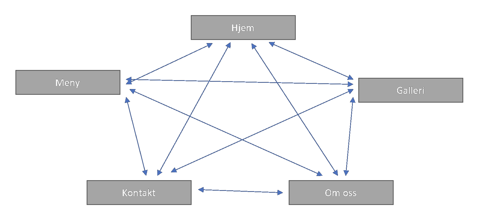

4. Navigasjon
Navigasjonen på nettsiden vil være enkel. Man vil hele tiden ha tilgang til de forskjellige sidene (Hjem, Meny, Kontakt, Om oss) øverst på siden. Dette vil være en meny-linje som hele tiden følger brukeren. Hvis man scroller ned på en siden vil menyen fortsatt være tilgjengelig på toppen av vinduet. I tillegg vil vi markere siden du trykker på med en annen bakgrunnsfarge når du holder musen over knappen. Ved å trykke på logoen til Fryd Cafe AS så vil du også bli tatt tilbake til hjem-siden.
Grunnen til å koble sidene sammen på denne måten er for brukeropplevelsen. Ved å hele tiden ha tilgang til alle sidene vil man som bruker enkelt kunne navigere rundt på siden.

5. Side-struktur
Med tanke på at Fryd Café ikke har en hjemmeside fra før, er det universale designet viktig for å være
innbydende for målgruppen, men også for potensielle fremtidige kunder. Vi har dermed bestemt at det er
viktigst å fokusere på å lage nettsiden innbydende med enkelt design. Hovedsiden skal fokusere på å gi
kunden et godt førsteinntrykk ved å ha en oversikt over den viktigste informasjonen. Først et innbydende
bilde, en liten invitasjon til deres meny side, kort beskrivelse av hvem de er og hva de står for, og til
slutt en footer med deres lokasjon, åpningstider i dag og sosiale medier.
Navigasjonsfeltet er også viktig for å hjelpe kunden å finne informasjonen de trenger. De ulike kategoriene er:
- «Hjem» for å enkelt komme tilbake til forsiden.
- «Meny» for å få en rask og enkel oversikt over menyen deres. Dette vil bli en utvidelse av det som kommer på hovedsiden.
- «Kontakt» vil være for potensielle samarbeidspartnere og kunder. Her vil de kunne se kontaktinfo, adresse og åpningstider.
Dette vil bli en utvidelse av det som kommer på hovedsiden.
- «Galleri» er for å legge ut bilder av kunder, produkter og skape en innbydende og koselig atmosfære.
- «Om oss» vil være litt om historien til kafeen og hvem de er og hva de står for. Dette vil bli en utvidelse av det som
kommer på hovedsiden.
Fryd Café hadde 1 krav som var farger på nettsiden, svart, brun og hvit. Utenom dette hadde vi frie tøyler til å være kreative.

Figur ?: Mockup av hovedsiden
Den spesifikke stylingen for nettsiden som gjelder for alle sidene finnes nedenfor:
- Font
- Fargevalg
- Tekst
- Bakgrunn
- Linker
- Tekst
- Tekst
- Body bredde
- Linker
- Navigasjonsfelt
- Banner
- Footer
- Bakgrunn
- Boarder bilder ?
- Logo
8. Plan
We will use following scheme and map structure to store our files
and images. There can be some changes according image files we
going to use, cause that is something that gonna be discussed with
our client before submitting the work/website.
Files structure
- homepage.html
- menu.html
- gallery.html
- about.html
- contact.html
- img
- img1.png
- img2.png
- img3.png
- img4.png
- img5.png
- img6.png
- img7.png
- ...
- menu1.png
- menu2.png
- menu3.png
- ...
- decorative1.png
- decorative2.png
- ...
- scripts
- img.js
- backgroundImg.js
- media.js
- style.css
According images:
Images named img. are the copyright images we recieved from
ur client, these images will be used for showing products and
more, our client offer. Images named menu. are images of client's
menu, they will be used on menu page describing products client
offer. The last type of images is decorative. These are open
source pictures without copyright that may be used in decorative
context.
According JavaScript files:
We are not sure how many effects we are going to use on our
website, and this is not really necessary for our client, but
some effects will be used to make animation effects and so on. That's
why we include some dummy/sample .js file to show what they will
be used for.
According deadlines:
All the necessary files from our client will be recieved within
october 15th. Every member of group will cooperate together, that
means work with JavaScript, CSS and HTML to create the website.
Following person will have main responsibility for given part,
and deadline for getting this done is november 1th.
- Eva: homepage.html
- Ida: menu.html
- Andreas: gallery.html
- Jonas: about.html
- Kir: contact.html
By november 10th we should finish style.css which will be used
for whole project, and JavaScript files that will be used for
animation and more.